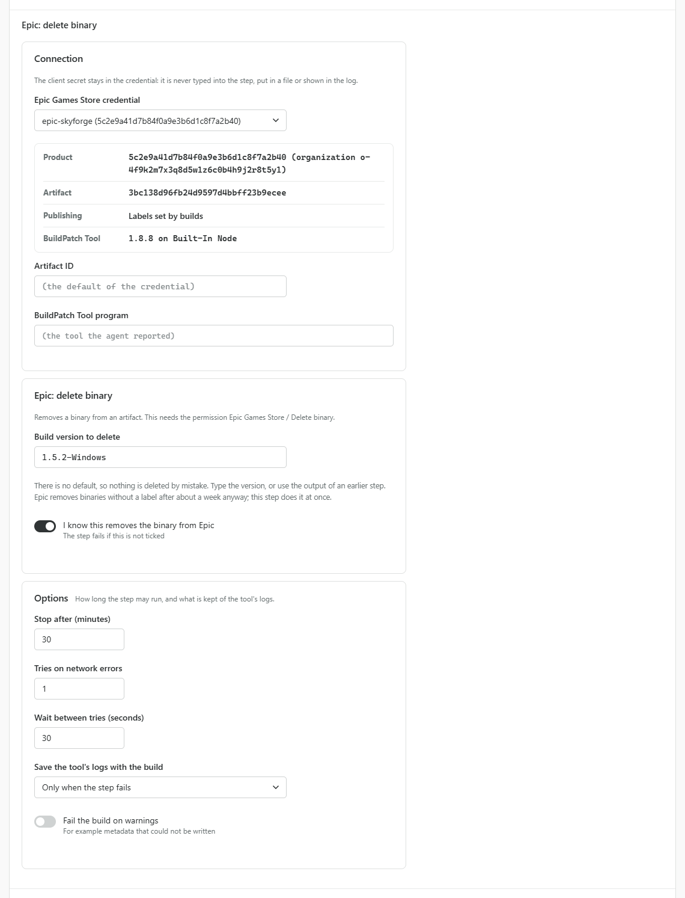

Epic: delete binary
Remove one binary from an Epic artifact at once.
When to use it
Use it to clear a bad or test upload. Epic removes binaries without a label after about a week anyway. This step does it at once. It cannot be undone, so it has no default version and needs a tick to confirm.
This step needs the permission Epic Games Store / Delete binary for the person who starts the build. The step fails without it.
Every Epic step runs the Epic BuildPatch Tool on the agent. The agent needs the tool: see Install BuildPatch Tool. A step that needs a newer tool than the agent has stops with a message that names the version the agent has.
How to set it up
- Open the build configuration, then Settings › Build steps › Add build step.
- Type
Epicin Filter step types and click Epic: delete binary. - Pick the credential and, if needed, the artifact.
- Type the Build version to delete.
- Tick I know this removes the binary from Epic.
- Click Save.

Every field
Connection
| Field | What it does | Default | Example |
|---|---|---|---|
| Epic Games Store credential | The credential that holds your BuildPatch Tool keys. The list shows the credentials you may use. The secret is never typed in the step, never written to a file and never shown in the log. | None. The step fails if you pick nothing. | Epic Store (Skyforge) |
| Artifact ID | The Epic artifact to work on. Leave it empty to use the Default artifact ID of the credential. | Empty (the credential default) | 0f2b8a6c9d1e4c37a5e8b1d6c2f94a70 |
| BuildPatch Tool program | The full path of the BuildPatch Tool program on the agent. Leave it empty to use the tool the agent reported. | Empty (the tool the agent reported) | D:/Tools/BuildPatchTool/BuildPatchTool.exe |
Epic: delete binary
| Field | What it does | Default | Example |
|---|---|---|---|
| Build version to delete | The version to remove. There is no default, so nothing is deleted by mistake. Type the version, or use the output of an earlier step. | Empty | 1.4.55-Windows |
| I know this removes the binary from Epic | The step fails when this is not ticked. | Off | On |
Options
| Field | What it does | Default | Example |
|---|---|---|---|
| Stop after (minutes) | The step is stopped after this time. | 30 | 30 |
| Tries on network errors | How many times the step runs BuildPatch Tool when it fails because of a network problem. A wrong key or a missing permission is never tried again. | 1 | 3 |
| Wait between tries (seconds) | The pause between two tries. | 30 | 60 |
| Save the tool’s logs with the build | Whether the logs BuildPatch Tool wrote on the agent are kept as build artifacts in epic-logs. Choices: Only when the step fails, Always, Never. | Only when the step fails | Always |
| Fail the build on warnings | Fails the step when BuildPatch Tool gave warnings, for example when metadata could not be written. Without it, warnings only show in the log. | Off | On |
A worked example
A test upload 0.0.1-Windows-test is no longer needed. A build Epic Cleanup has one step: credential Epic Store (Skyforge), Build version to delete 0.0.1-Windows-test, confirmation ticked. Only people with Delete binary can start it.
What you see when it runs
Epic: credential Epic Store (Skyforge), product 8c1d5f, artifact 0f2b8a..., Publishing: Labels set by builds Epic: delete version 0.0.1-Windows-test from artifact 0f2b8a... Epic: version 0.0.1-Windows-test was deleted from artifact 0f2b8a...
Problems and fixes
| Message | What to do |
|---|---|
| Tick "I know this removes the binary from Epic" in the step first | Open the step and tick the confirmation. |
| The person who started this build may not delete a binary | Ask an administrator for the permission Epic Games Store / Delete binary. |
| A version is required | Fill in Build version to delete. |
Related pages
- Epic Games Store
- Epic: inspect binaries: list versions first.
- Epic Games Store credential: permissions.